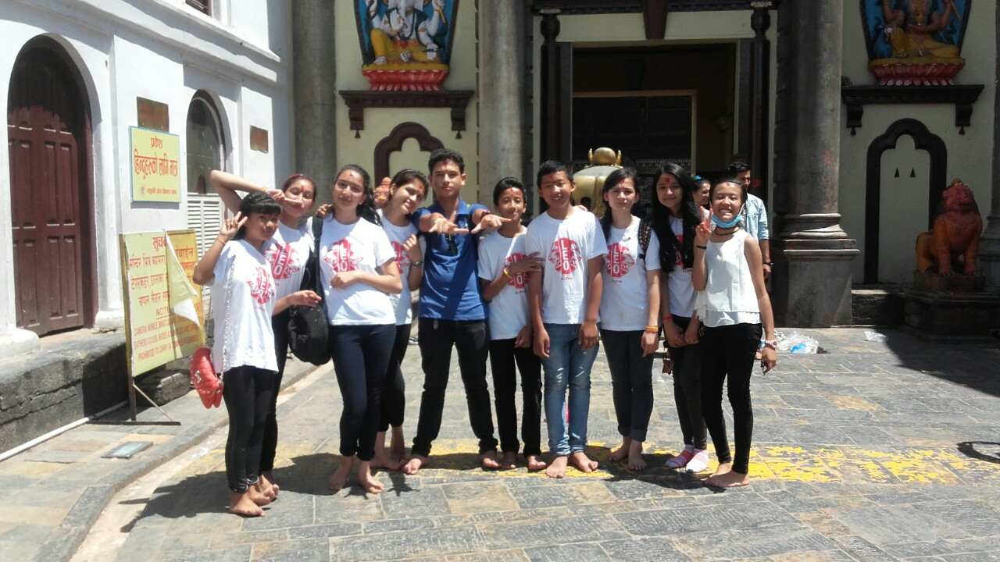

Leo CLub of Bhanubhakta Sponsered by Lions Club of Mount Makalu

Leo Club of Bhanubhakta was established in 2000 AD in Bhanubhakta Memorial Higher Secondary School.
This is an social organization which works for the welfare of the people. It is the only Alpha leo club in the whole Nepal.
The objective of this club is to provide the youth of the world an opportunity for development and contribution, individually
and collectively as responsible members of the local, national and international community, to stimulate among its members
acceptance of high ethical standard, to develop Leadership, to provide experiences through service to the community, to
provide an opportunity to promote international understanding.
Leo Club Motto
Leadership – Develop skills as a project organizer, time manager and team leader. Experience – Learn how teamwork, cooperation and collaboration can bring exciting changes to your community and the world. Opportunity – Make friends and feel the rewards of community service.
 Leo CLub of Bhanubhakta
Leo CLub of Bhanubhakta